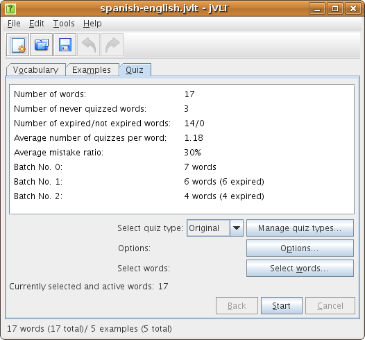
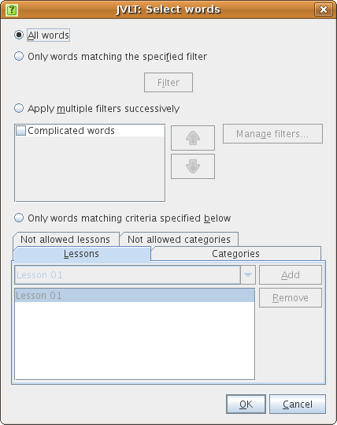
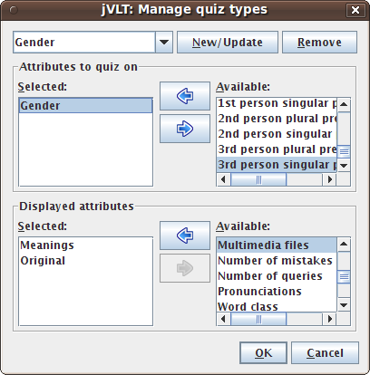
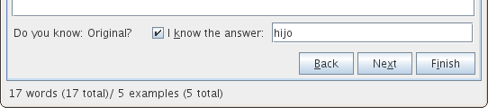
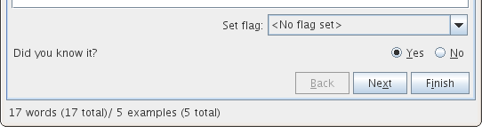
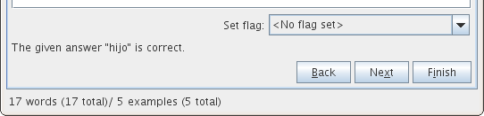
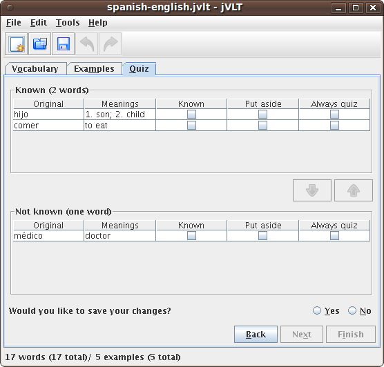

jVLT - a vocabulary learning tool
Quizzes
- Batch No. 0: 0 days
- Batch No. 1: 1 days
- Batch No. 2: 3 days
- Batch No. 3: 9 days
- Batch No. 4: 27 days
- Batch No. 5: 81 days
- Batch No. 6: 283 days
- Batch No. 7: 849 days

Before the quiz
Before starting a quiz, you can restrict the words to be quizzed to certain word groups by pressing on the "Select words..." button which opens a dialog of the same name. In the dialog, four methods for selecting words are offered:- All words: All words will be quizzed.
- Only words matching the specified filter: Only words that match a certain filter will be quizzed. If this option is selected, a filter has to be specified by pressing the "Filter..." button. The dialog that opens thereafter is described here.
- Apply multiple filters successively: You can also select multiple filters that will be applied successively. For example, you can specify that first all the words that have not been tested before will be quizzed, and after that the words of a certain lesson. You can add new filters by clicking on the "Manager filters..." button.
- Only words matching category criteria specified below: Select this option if you want to quickly select the categories that should (not) be quizzed.

jVLT quizzes on the "Original" field by default. You can design other types of quizzes by using the dialog that appears after pressing the "Manage quiz types..." button.

In the dialog, you select the field to quiz on, and the fields which are shown during the quiz question. You also have to name the newly created quiz type by entering a name into the text field at the top of the dialog and pressing "New/Update" afterwards. You can also change existing quiz types by selecting them via the drop-down menu at the top of the dialog and pressing "New/Update" after the changes have been made.
After having added a new quiz type and closing the dialog by pressing "OK", you can select the new quiz type via the "Select quiz type" drop-down menu.
During the quiz
Dependent on what you configured in the quiz settings, a quiz can be performed in two different ways. The first possibility is that you enter the solution which is shown in the figure below.
After you pressed "Next", the solution is shown and a message appears saying whether your answer was correct or not.

The second possibility is that you do not enter the solution (you can write it on a piece of paper instead), and jVLT asks you - after you pressed "Next" - whether you knew the correct answer.

You can cancel a quiz at any time by pressing "Finish". In the next section, it is described what happens thereafter.
After the quiz
If you decided to finish the quiz, jVLT asks whether you want to repeat the words you did not know. Afterwards two lists are displayed which show those words you knew and those you did not know, respectively. If you mistakenly classified known words as not known or vice versa, you can now correct your mistakes by selecting the respective words and press the arrow buttons. At last, you can decide whether to save the results of this quiz so they can be taken into account for future quizzes.